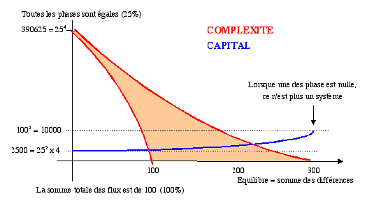
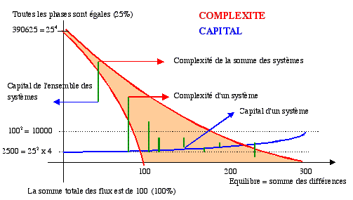
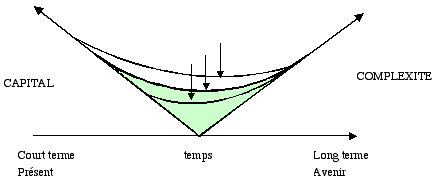

Les systèmes accumulent différents types de capitaux. Le capital actuel, c'est-à-dire le capital estimé sur la base des flux actuels (capacité à produire des flux) permet le développement des systèmes dans le court terme. Il en découle de la définition même du capital actuel, puisqu'il est définit comme étant la capacité à produire de flux. Dans le moyen terme, on estime le capital des systèmes par des méthodes analitiques qui deviennent rapidement compliquées et aléatoire (indices, statistiques,...). Dans tout les cas le capital est directement dépendant des valeurs éthiques, sociales et biologiques. Ces valeurs évoluent en fonction des contraintes de l'environnement (psycho-spirituel, social, biologique et physique). Dans le long terme ou le très long terme, il est impossible de prédire les valeurs sociales, ni les contraintes qui pèserons sur les différents systèmes. On peut certainement prédire un certain nombre de contraintes dans le future ainsi que les valeurs qui leur seront associées, (eau portable, énergie, pression démographiques,...) mais on ne sait pas la hiérarchie de ces valeurs. D'autre part, les innovations technologiques boulversent souvent l'ordre des contraintes, des problèmes complexes trouvant des solutions remarquables, alors que des problèmes simples n'ont pas de soultions. Les contraintes majeurs seront-elle de l'ordre des croyances (conflit irrationels de croyances), des cultures (distribution des richesses,...), des êtres vivants( (surpeupulation, maladies,...) ou des systèmes physiques (manque de ressources, pollutions, réchauffement,...)? Nul ne peut rationellement le prédire. La complexité, est le capital long terme des systèmes, car elle n'est pas centrée sur des valeurs sociales. Elle détermine la capacité à se développer par sa capacité à reproduire son identité pour transmettre ses acquis et les rendre indissoble dans le temps, à se différencier pour s'adapter à son environnement, à s'organiser en produisant de la hiérarchie (acquisition des ressources extérieurs, performance intérieur par la résolution en étage des contraintes) et à produire une dépendance interne et externe à travers le lien. La complexité est ainsi une mesure des potentialité à long terme des systèmes ou des ensembles de systèmes.
Un équilibre doit exister entre la capital cout terme et le capital long terme. L'un et l'autre sont indispensable, mais ils sont aussi antagonistes. Le capital actuel est d'autant plus élevé que la complexité est faible. La structure mathématique du calcul de ces deux grandeurs respecte cette logique puisque le capital est le produit des flux des quatre phases, alors que le capital est la somme du carré de chaque phase.
Opposition entre capital et complexité
Pour maximiser les capitaux, les systèmes doivent favoriser un déséquilibre entre les phases afin de favoriser un capital bien spécifique. En revanche, pour maximiser la complexité, le système doit favoriser un équilibre entre les phases. Il existe donc une concurrence entre la stratégie capitaliste qui accumule au maximum les capitaux et la stratégie complexe qui recherche un équilibre entre les phases qui produit la stabilité à long terme et un potentiel de développement. Favoriser le capital est une approche à court terme alors que veiller à l'équilibre des phases est une vision à long terme. Le capital étant dissymétrique engendre des flux dissymétrique et déséquilibre le système
Si un système a de grands capitaux mais est intégré dans un ensemble de systèmes très fragile, le résultat dans le long terme sera incertain. Il aura accès à beaucoup de ressources mais son environnement fragile risque d'entraver son développement malgré l'abondance des flux (situation actuelle entre le social et le bio-physique). Les flux entropique deviendront prépondérants ce qui diminuera la complexité et la performance systémique. Si un système possède peu de capitaux, mais dans un environnement équilibré, il risque de ne pas avoir accès à suffisamment de ressources pour se développer. Cette situation pourra se prolonger puisque l'environnement est équilibré.
Nous pouvons mesurer la complexité à partir des flux car, à la différence des capitaux, ce sont les flux qui constituent la réalité de ce que nous observons. Les capitaux ne sont qu'une mesure de valeur en relation avec les échelles de valeurs spécifiques à chaque système. Cependant, le capital est important, car c'est lui qui va déterminer, au sein d'un système la répartition des ressources (matières consommables, utilisables, partageables,�) entre ses éléments.
La stratégie de tout système est ainsi de chercher à maximiser son capital dans un ensemble de système le plus viable possible sur le long terme. La maximisation du capital se fait sur le court terme puisque les capitaux fluctuent en fonction de l'échelle des valeurs qui elle est dépendante des contraintes de l'environnement, alors que la recherche de la complexité est une stratégie à long terme.
Nous avons parlé de la dynamique de l'évolution des phases comme étant le moteur de l'évolution. En effet l'alternances des flux et des capitaux dans les différentes phases produit la réaction en cha�ne vers la complexité. Sur le court terme, cette dynamique permet, à travers les déséquilibres, l'évolution des systèmes par la production des capitaux qui figent en quelque sorte les états complexes. Il s'agit en fait d'une spécialisation des systèmes dans les différentes phases. Cependant, dans le temps, sur le long terme, les phases doivent êtres équilibrés afin d'éviter les évolutions par ruptures. La somme des composantes des différents flux doit être équilibrée dans le temps comme dans l'espace. La somme de l'ensemble des systèmes tend vers un équilibre quand bien même les systèmes individuels sont en permannant déséquilibre
.

Pour déterminer l'équilibre entre stratégie court terme et stratégie long terme, on place sur le schéma ci-dessus l'état de son système. Sur l'axe horizontal, on place la somme des différences en pourcent. Par exemple, un système qui aura les valeurs suivantes: 50-20-20-10 aura pour somme des différences 120 (=30+30+40+0+10+10). En comparant des valeurs dans le temps, on peut déterminer la tendance évolutive du système.
En plaçant sur ce même schéma les systèmes qui composent l'environnement, on peut déterminer la durabilité d'un ensemble de systèmes. Plus il y a de systèmes, plus ils sont différenciés c'est-à-dire spécialisés, plus les capitaux sont importants et plus la complexité de l'ensemble est grande. En effet, on additionne les capitaux de l'ensemble des systèmes individuels, alors que pour la complexité on additionne d'abord chaque phase avant de calculer la complexité de l'ensemble. Nous pouvons définir des types de profils pour caractériser un ensemble de systèmes.
Un exemple de profil est donné ci-dessous. Remarquons que nous avons définit une variable comme étant la somme des différences (axe horizontal). Une autre variable peut être l'écart entre la valeur minimum et la valeur maximum. Lorsque l'écart est important la complexité est faible et le capital important.

Pour conduire un ensemble de système avec pour critère la complexité en rapport avec le capital, ou en mettant en opposition le développement à court terme et celui à long terme, on peut utiliser le schéma ci-dessous.
Les trois courbes correspondent à trois ensembles de systèmes qui ont des caractéristiques globalement différentes. La forme de ces courbes est dépendante de la structures des caractéristiques des systèmes que l'on représente. Par exemple, la courbe supérieur représente un ensemble de systèmes fortements différenciés, alor que la courbe inférieur représent un ensemble de systèmes peu différencié (peu de sous systèmes ou peu d'éléments systémiques dans le système). Si les trois courbes représentent le même nombre de sous-systèmes, alors la supérieur représentera des systèmes plus spécialisés (identités spécialisées dans chacune des interaction) donc des capitaux potentiels plus importants. Lorsque ce schéma structurel est définit, on place par des points position de chaque systèmes et la position de l'ensemble. Chaque système est représenté par un point sur le graphique. Ces systèmes possèdent un bassin d'attraction qui correspond au point bas du bassin (symbolisé par la flèche). Il en résulte que les systèmes les plus différenciés et ceux possédant le plus d'éléments, ont les valeurs potentiels les plus élevées de complexité et de capitlal. Ceux pour lesquel le potentiel de capital est plus élevé aura tendance a permettre la construction d'une complexité plus forte (glissement vers la droite). Ceux qui ont un capital potentiel faible auront un bassin d'équilibre décentré vers le capital, c'est-à-dire vers les priorités à court terme. Ce n'est que lorsqu'il y a abondance de capital que la complexité peut se construire.
Ce schéma permet ainsi de prévoir, à partir de l'état actuel des systèmes, la valeur de la complexité et des capitaux si l'on modifie des variables (R ou D ou H ou L), ou si l'on modifie la structure des systèmes (émergence de nouveaux systèmes ou fusion de systèmes). Il permet ainsi par exemple de simuler les interventions politiques. Par exemple le mouvement de mondialisation qui procède à des fusions d'entreprises va donner des courbes semblables à la courbe inférieure. Elle pousse naturellement le système vers moins de complexité et vers plus de capitalisation, bien que globalement le capital soit moins important mais concentré sur peu d'éléments. Dans ce cas, la complexité, au lieu d'être externe à l'entreprise devient interne à l'entreprise mondialisée car, en interne, elle est fortement différenciée.

| exemple | R |
D |
H |
L |
échelle
de valeur |
Capital x 10p6 |
| Système 1 | 40 |
30 |
20 |
10 |
120 |
43 |
| Système 2 | 10 |
60 |
25 |
5 |
250 |
272 |
| Système 3 | 25 |
35 |
30 |
10 |
60 |
10 |
| Système 4 | 45 |
30 |
15 |
5 |
110 |
38 |
| système 5 | 10 |
40 |
30 |
20 |
40 |
5 |
| système 6 | 15 |
55 |
20 |
10 |
140 |
74 |
| Total | 16250 |
33300 |
16100 |
5800 |
Complexité |
442
x 10p6 |
| 5.05
x 10p16 |
||||||
| Maximum | 53 x 10p16 |
11664 x 10p6 |